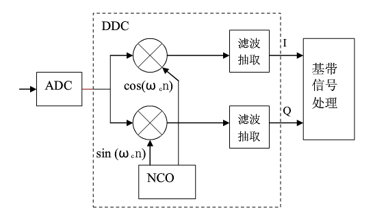
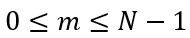
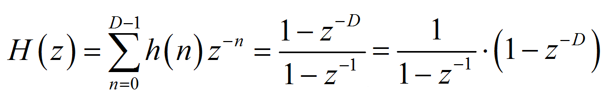
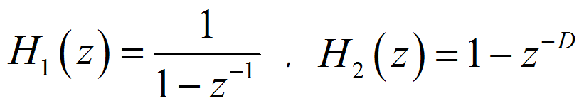
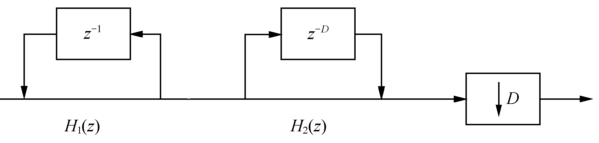
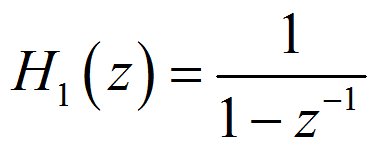
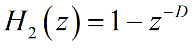
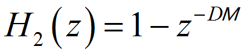
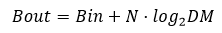

El filtro integrador-comb (CIC, Cascaded Integrator Comb) se utiliza generalmente en sistemas de conversión descendente digital (DDC) y conversión ascendente digital (DUC). El filtro CIC tiene una estructura simple, sin multiplicadores, solo sumadores, integradores y registros; consume pocos recursos, tiene una alta velocidad de operación y puede lograr un filtrado de alta velocidad. Se usa comúnmente en la primera etapa, donde la frecuencia de muestreo de entrada es la más alta, y tiene una amplia aplicación en sistemas de procesamiento de señales multitasa.
Principio del DDC
Principio de funcionamiento del DDC
El DDC se compone principalmente de un oscilador local (NCO), un mezclador, filtros, etc., como se muestra en la siguiente figura.

El DDC mezcla la señal de frecuencia intermedia con la señal portadora generada por el oscilador; la frecuencia central de la señal se desplaza y, después del filtrado con diezmado, se recupera la señal original, realizando así la función de conversión descendente.
Al muestrear datos de frecuencia intermedia, se necesita una frecuencia de muestreo muy alta para garantizar la relación señal-ruido de la señal capturada por el ADC (convertidor analógico-digital). Tras la conversión descendente digital, la frecuencia de muestreo de la señal de banda base obtenida sigue siendo la frecuencia de muestreo del ADC, por lo que la tasa de datos es muy alta. En este momento, el ancho de banda efectivo de la señal de banda base suele ser ya mucho menor que la frecuencia de muestreo; por lo tanto, utilizar diezmado y filtrado para convertir la tasa de datos, reducir la frecuencia de muestreo y evitar el desperdicio de recursos y las dificultades de diseño, se convierte en una parte indispensable del DDC.
El uso del filtro CIC para el procesamiento de datos es el método más habitual en la parte de filtrado con diezmado del DDC.
Teorema de muestreo de paso de banda
En el sistema DDC, la señal portadora de frecuencia intermedia de entrada se desplaza en frecuencia según la frecuencia portadora, obteniendo una señal de paso de banda. Si en este momento se sigue aplicando el teorema de muestreo de Nyquist, es decir, la frecuencia de muestreo es el doble de la frecuencia más alta de la señal de paso de banda, la frecuencia de muestreo requerida será muy alta y el diseño se volverá complejo. En este caso, la frecuencia de muestreo puede determinarse según el teorema de muestreo de paso de banda.
de la señal continua de paso de banda, cuyo ancho de banda es . Sea
. Sea , donde N es el mayor entero positivo no mayor que
, donde N es el mayor entero positivo no mayor que

el mayor entero positivo; si la frecuencia de muestreo satisface la condición: Entonces la señal puede reconstruirse completamente sin distorsión a partir de sus valores de muestra.
Entonces la señal puede reconstruirse completamente sin distorsión a partir de sus valores de muestra.

Cuando m=1, el teorema de muestreo de paso de banda se convierte en el teorema de muestreo de Nyquist.
Otra forma de describir el teorema de muestreo de paso de banda es: si la frecuencia más alta de la señal es un múltiplo entero del ancho de banda de la señal, la frecuencia de muestreo solo necesita ser mayor que el doble del ancho de banda de la señal; en este caso no se producirá solapamiento espectral.
Por lo tanto, se puede considerar que la mitad de la frecuencia de muestreo es la frecuencia de corte del filtro CIC.
Desplazamiento espectral del DDC
Por ejemplo, una señal de banda con frecuencia central de 60 MHz y ancho de banda de 8 MHz tiene un rango de frecuencia de 56 MHz a 64 MHz; el valor de m puede tomar un rango de 0 a 7. Tomando m=1, el rango de frecuencia de muestreo es de 64 MHz a 112 MHz.
Tomando la frecuencia de muestreo como 80 MHz y la frecuencia central del NCO como 20 MHz, a continuación se analiza el diagrama de desplazamiento espectral de la señal compleja.
(1) Considerando la simetría del espectro, el diagrama espectral de la señal compleja de entrada es el siguiente:
(2) Después del muestreo con una frecuencia de muestreo de 80 MHz, la banda de 56~64 MHz se desplaza a las bandas de -24~-16 MHz y 136~144 MHz (esta última, por ser mayor que la frecuencia de muestreo, se filtra); la banda de -64~-56 MHz se desplaza a las bandas de -144~-136 MHz (también filtrada por ser mayor que la frecuencia de muestreo) y 16~24 MHz.

La distribución de bandas después del muestreo es la siguiente:
(3) Después de que la señal pasa por el circuito ortogonal del NCO de 20 MHz, la banda de -24~-16 MHz se desplaza a las bandas de -4~4 MHz y -44~-36 MHz; la banda de 16~24 MHz se desplaza a las bandas de -4~4 MHz y 36~44 MHz, como se muestra a continuación.

(4) En este momento, la señal de entrada de frecuencia intermedia ya se ha desplazado a la banda base de frecuencia intermedia cero.

Las señales de banda de -44~-36 MHz y 36~44 MHz no son necesarias y pueden filtrarse; la señal de frecuencia intermedia cero de -4~4 MHz todavía tiene una tasa de datos de 80 MHz, por lo que se puede diezmar para reducir la tasa de datos. El filtrado CIC es precisamente el encargado de completar este proceso.
Lo anterior ha repasado mucho contenido de procesamiento digital de señales; considérese como un simple preludio para presentar el DDC y dar paso al CIC.
Principio del filtro CIC
Principio del filtro CIC
Sea D la relación de diezmado del filtro, entonces la respuesta al impulso del filtro de una sola etapa es:
Aplicando la transformada z, se obtiene la función del sistema del filtro CIC de una sola etapa:

Se puede observar que el filtro CIC de una sola etapa incluye dos componentes básicos: la parte integradora y la parte de peine. El diagrama de estructura es el siguiente:

令

Integrador

El integrador es un filtro IIR (Infinite Impulse Response, respuesta al impulso infinita) de un solo polo, con coeficiente de retroalimentación igual a 1. Su ecuación de estado y función del sistema son respectivamente:
Filtro peine


El filtro peine es un filtro FIR, cuya ecuación de estado y función del sistema son respectivamente:
Diezmador


Después del integrador hay también un diezmador, cuya relación de diezmado es consistente con el parámetro de retardo del filtro peine. Utilizando las propiedades de la transformada z para realizar una transformación de identidad, moviendo el diezmador entre el integrador y el filtro peine, se puede obtener la estructura del filtro CIC de una sola etapa, como se muestra a continuación.
Descripción de parámetros

Antes de la transformación de la estructura del filtro CIC, el parámetro D puede entenderse como el retardo u orden del filtro peine; después de la transformación, el significado de D se convierte en la relación de diezmado, mientras que el retardo del filtro peine es 1, es decir, el orden es 1.
Muchos autores introducen una variable M para representar el retardo de cada etapa del filtro peine; en este caso, el retardo de la parte de peine ya no es 1. Entonces la función del sistema del filtro peine se convierte en:
En realidad, se puede entender DM en su conjunto como el retardo del filtro de una sola etapa, o como la relación de diezmado. Quizás la forma o estructura de implementación sea diferente, pero el resultado final es el mismo. En este diseño, el retardo del filtro de una sola etapa es M=1, es decir, la relación de diezmado es igual al retardo del filtro.

Filtro CIC de múltiples etapas
La atenuación de la banda de rechazo de un filtro CIC de una sola etapa es deficiente. Para mejorar el efecto de filtrado, en el filtrado con diezmado a menudo se adopta una estructura de filtros CIC de múltiples etapas en cascada.
Implementar un filtro CIC de múltiples etapas directamente en cascada no es la forma óptima en cuanto a diseño y recursos; es necesario ajustar su estructura. Como se muestra a continuación, los integradores y los filtros peine se agrupan por separado, y el diezmador se mueve antes del filtro peine. Diezmar primero y luego filtrar reduce la longitud del procesamiento de datos y ahorra recursos de hardware.
Por supuesto, cuanto mayor sea el número de etapas en cascada, mejor será la supresión de lóbulos laterales, pero la planitud dentro de la banda de paso también empeorará. Por lo tanto, el número de etapas no debe ser excesivo; generalmente como máximo 5 etapas.

Diseño del filtro CIC
Diseño del filtro CIC
El filtro CIC es esencialmente un filtro paso bajo simple, cuya frecuencia de corte es la mitad de la frecuencia de muestreo dividida por la relación de diezmado. La señal de datos de entrada sigue siendo de 7.5 MHz y 250 kHz, con una frecuencia de muestreo de 50 MHz. Si la relación de diezmado se establece en 5, la frecuencia de corte es de 5 MHz, menor que 7.5 MHz, por lo que se puede filtrar el componente de frecuencia de 7.5 MHz. Los parámetros de diseño son los siguientes:
En cuanto al ancho de bits de la señal de datos intermedia durante la integración, muchas fuentes dan diferentes métodos de cálculo y los resultados varían considerablemente. Aquí se resume el método de cálculo más utilizado:
输入频率： 7.5MHz 和 250KHz 采样频率： 50MHz 阻带： 5MHz 阶数： 1（M=1） 级数： 3（N=3）
Donde D es la relación de diezmado, M es el orden del filtro y N es el número de etapas del filtro. Con una relación de diezmado de 5, un orden de filtro de 1, un número de etapas en cascada de 3, un ancho de bits de datos de entrada de 12 bits y redondeando la parte logarítmica hacia arriba, el ancho de bits de la señal intermedia para que los datos no se desborden después de la integración es de 21 bits.

Para un diseño con mayor margen, si el orden del filtro se interpreta como el de la estructura directa del filtro CIC de múltiples etapas antes de la transformación de estructura, entonces el orden del filtro puede considerarse 5; en este caso, el ancho de bits máximo de la señal intermedia es de 27 bits.
Diseño del integrador
Según el control de la señal válida de los datos de entrada, el integrador simplemente realiza una acumulación; preste atención al ancho de bits de los datos.
Ejemplo
Ejemplo
module integrator
#(parameter NIN = 12,
parameter NOUT = 21)
(
input clk ,
input rstn ,
input en ,
input [NIN-1:0] din ,
output valid ,
output [NOUT-1:0] dout) ;
reg [NOUT-1:0] int_d0 ;
reg [NOUT-1:0] int_d1 ;
reg [NOUT-1:0] int_d2 ;
wire [NOUT-1:0] sxtx = {{(NOUT-NIN){1'b0}}, din} ;
//data input enable delay
reg [2:0] en_r ;
always @(posedge clk or negedge rstn) begin
if (!rstn) begin
en_r <= 'b0 ;
end
else begin
en_r <= {en_r[1:0], en};
end
end
//integrator
//stage1
always @(posedge clk or negedge rstn) begin
if (!rstn) begin
int_d0 <= 'b0 ;
end
else if (en) begin
int_d0 <= int_d0 + sxtx ;
end
end
//stage2
always @(posedge clk or negedge rstn) begin
if (!rstn) begin
int_d1 <= 'b0 ;
end
else if (en_r[0]) begin
int_d1 <= int_d1 + int_d0 ;
end
end
//stage3
always @(posedge clk or negedge rstn) begin
if (!rstn) begin
int_d2 <= 'b0 ;
end
else if (en_r[1]) begin
int_d2 <= int_d2 + int_d1 ;
end
end
assign dout = int_d2 ;
assign valid = en_r[2];
endmodule
Al diseñar el diezmador, cuente los datos de salida del integrador y luego extraiga un dato cada 5 datos.
Ejemplo
Ejemplo
#(parameter NDEC = 21)
(
input clk,
input rstn,
input en,
input [NDEC-1:0] din,
output valid,
output [NDEC-1:0] dout);
reg valid_r ;
reg [2:0] cnt ;
reg [NDEC-1:0] dout_r ;
//counter
always @(posedge clk or negedge rstn) begin
if (!rstn) begin
cnt <= 3'b0;
end
else if (en) begin
if (cnt==4) begin
cnt <= 'b0 ;
end
else begin
cnt <= cnt + 1'b1 ;
end
end
end
//data, valid
always @(posedge clk or negedge rstn) begin
if (!rstn) begin
valid_r <= 1'b0 ;
dout_r <= 'b0 ;
end
else if (en) begin
if (cnt==4) begin
valid_r <= 1'b1 ;
dout_r <= din;
end
else begin
valid_r <= 1'b0 ;
end
end
end
assign dout = dout_r ;
assign valid = valid_r ;
endmodule
El filtro peine es simplemente un filtro FIR de primer orden. En cada etapa, el filtro FIR retrasa los datos un ciclo de reloj y luego realiza una resta. Debido a que los coeficientes son ±1, no se necesitan multiplicadores.
Ejemplo
Ejemplo
#(parameter NIN = 21,
parameter NOUT = 17)
(
input clk,
input rstn,
input en,
input [NIN-1:0] din,
input valid,
output [NOUT-1:0] dout);
//en delay
reg [5:0] en_r ;
always @(posedge clk or negedge rstn) begin
if (!rstn) begin
en_r <= 'b0 ;
end
else if (en) begin
en_r <= {en_r[5:0], en} ;
end
end
reg [NOUT-1:0] d1, d1_d, d2, d2_d, d3, d3_d ;
//stage 1, as fir filter, shift and add(sub),
//no need for multiplier
always @(posedge clk or negedge rstn) begin
if (!rstn) d1 <= 'b0 ;
else if (en) d1 <= din ;
end
always @(posedge clk or negedge rstn) begin
if (!rstn) d1_d <= 'b0 ;
else if (en) d1_d <= d1 ;
end
wire [NOUT-1:0] s1_out = d1 - d1_d ;
//stage 2
always @(posedge clk or negedge rstn) begin
if (!rstn) d2 <= 'b0 ;
else if (en) d2 <= s1_out ;
end
always @(posedge clk or negedge rstn) begin
if (!rstn) d2_d <= 'b0 ;
else if (en) d2_d <= d2 ;
end
wire [NOUT-1:0] s2_out = d2 - d2_d ;
//stage 3
always @(posedge clk or negedge rstn) begin
if (!rstn) d3 <= 'b0 ;
else if (en) d3 <= s2_out ;
end
always @(posedge clk or negedge rstn) begin
if (!rstn) d3_d <= 'b0 ;
else if (en) d3_d <= d3 ;
end
wire [NOUT-1:0] s3_out = d3 - d3_d ;
//tap the output data for better display
reg [NOUT-1:0] dout_r ;
reg valid_r ;
always @(posedge clk or negedge rstn) begin
if (!rstn) begin
dout_r <= 'b0 ;
valid_r <= 'b0 ;
end
else if (en) begin
dout_r <= s3_out ;
valid_r <= 1'b1 ;
end
else begin
valid_r <= 1'b0 ;
end
end
assign dout = dout_r ;
assign valid = valid_r ;
endmodule
Instanciando el integrador, el diezmador y el filtro peine según el flujo de la señal, se puede formar el módulo final del filtro CIC.
El ancho de bits de salida final del filtro peine suele ser algo menor que el de la señal de entrada; aquí se toma 17 bits. Por supuesto, el ancho de bits de salida puede ser exactamente igual al ancho de bits de los datos de entrada.
Ejemplo
Ejemplo
#(parameter NIN = 12,
parameter NMAX = 21,
parameter NOUT = 17)
(
input clk,
input rstn,
input en,
input [NIN-1:0] din,
input valid,
output [NOUT-1:0] dout);
wire [NMAX-1:0] itg_out ;
wire [NMAX-1:0] dec_out ;
wire [1:0] en_r ;
integrator #(.NIN(NIN), .NOUT(NMAX))
u_integrator (
.clk (clk),
.rstn (rstn),
.en (en),
.din (din),
.valid (en_r[0]),
.dout (itg_out));
decimation #(.NDEC(NMAX))
u_decimator (
.clk (clk),
.rstn (rstn),
.en (en_r[0]),
.din (itg_out),
.dout (dec_out),
.valid (en_r[1]));
comb #(.NIN(NMAX), .NOUT(NOUT))
u_comb (
.clk (clk),
.rstn (rstn),
.en (en_r[1]),
.din (dec_out),
.valid (valid),
.dout (dout));
endmodule
testbench
«Diseño de filtro FIR paralelo»la sección.Ejemplo
Ejemplo
parameter NIN = 12 ;
parameter NMAX = 21 ;
parameter NOUT = NMAX ;
reg clk ;
reg rstn ;
reg en ;
reg [NIN-1:0] din ;
wire valid ;
wire [NOUT-1:0] dout ;
//=====================================
// 50MHz clk generating
localparam T50M_HALF = 10000;
initial begin
clk = 1'b0 ;
forever begin
# T50M_HALF clk = ~clk ;
end
end
//============================
// reset and finish
initial begin
rstn = 1'b0 ;
# 30 ;
rstn = 1'b1 ;
# (T50M_HALF * 2 * 2000) ;
$finish ;
end
//=======================================
// read cos data into register
parameter SIN_DATA_NUM = 200 ;
reg [NIN-1:0] stimulus [0: SIN_DATA_NUM-1] ;
integer i ;
initial begin
$readmemh("../tb/cosx0p25m7p5m12bit.txt", stimulus) ;
i = 0 ;
en = 0 ;
din = 0 ;
# 200 ;
forever begin
@(negedge clk) begin
en = 1 ;
din = stimulus[i] ;
if (i == SIN_DATA_NUM-1) begin
i = 0 ;
end
else begin
i = i + 1 ;
end
end
end
end
cic #(.NIN(NIN), .NMAX(NMAX), .NOUT(NOUT))
u_cic (
.clk (clk),
.rstn (rstn),
.en (en),
.din (din),
.valid (valid),
.dout (dout));
endmodule // test
仿真结果
Según los resultados de la simulación en la siguiente figura, la señal después del filtro CIC solo tiene una señal de baja frecuencia (250KHz), y la señal de alta frecuencia (7.5MHz) ha sido filtrada.
Sin embargo, la forma de onda no es muy perfecta, lo que está relacionado con la frecuencia de corte del diseño, la salida de datos no continua, etc.
En este momento, se descubre que la señal de datos de salida del integrador también es muy irregular, lo que está relacionado con su ancho de bits.

Para observar mejor los datos de salida del integrador, se cambió su ancho de bits de 21 bits a 34 bits, y los resultados de la simulación son los siguientes.
En este momento, se descubre que la salida de datos del filtro CIC no ha cambiado sustancialmente, pero la señal de datos de salida del integrador presenta una forma de diente de sierra, también llamada forma de peine. Este es el origen del nombre del filtro de peine (comb filter).

Haz clic para compartir notas
<p style="font-size:14px;">¡Las notas deben ser una extensión del contenido de este artículo!</p><br> <p style="font-size:12px;"><a href="../tougao.html" target="_blank">Envío de artículos, haga clic aquí</a></p> <p style="font-size:14px;"><a href="./runoob-user-test-intro.html" target="_blank">Cómo obtener el código de invitación de registro</a></p> <h3 class="text-muted"><i class="fa fa-info-circle" aria-hidden="true"></i> Antes de compartir notas debe <a href=".." class="runoob-pop">iniciar sesión</a>!</h3> <p><a href="./runoob-user-test-intro.html" target="_blank">Cómo obtener el código de invitación de registro</a></p>